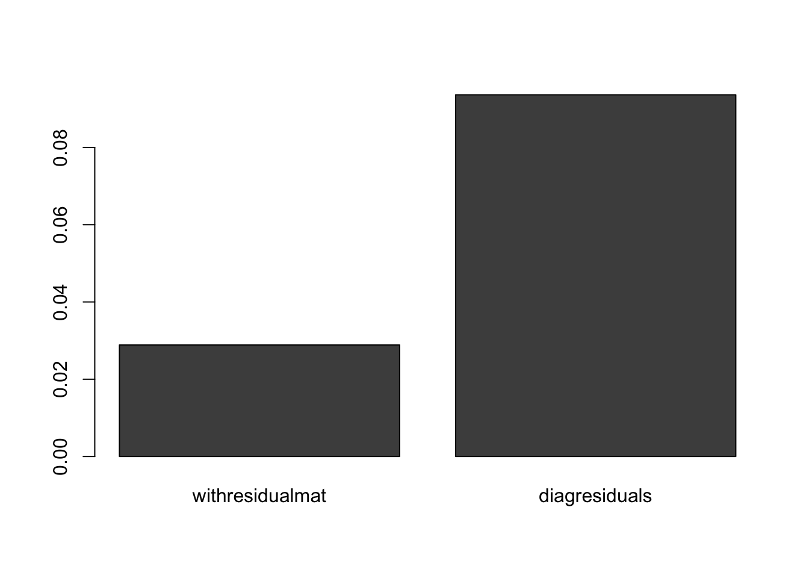
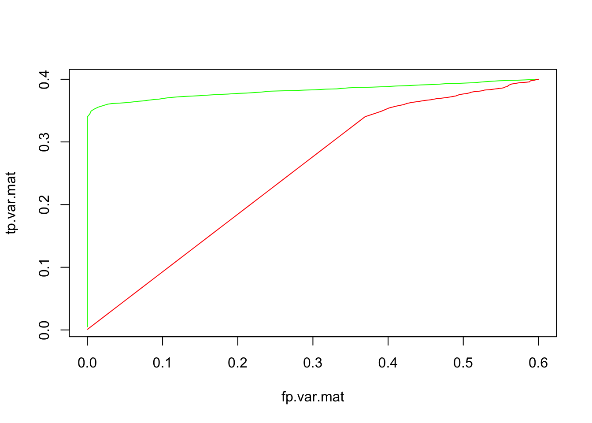

Chapter 6 Final Words
We have finished a nice book.
6.1 Testing Under ET Model
Great!! Now let’s make sure this is true with the ET model.Recall that in the ET model:
\[\frac{\beta}{\hat{s}} \sim N(0,Uk)\] Thus the input summary statistic is \(t_j \sim N(0,V_j)\) where \(t_{jr}\) has standard error of 1.
First, we repeat the checks between the old and new code check to see they give the same result when the residuals are assumed to be uncorrelated (i.e., var mat is the Identity matrix)
##Here i just rescale the covariance matrices to be consistent with the fact that the true Z's are on order $1/standard error$ larger.
covmat=lapply(s$component.mats,function(x){
#median(abs(s$t.stat))^2*
(1/0.11)^2*x})
compute.hm.train.log.lik.pen.vmat(train.b = s$t.stat[1:1000,],covmat=covmat,A = "testwithtdiag",pen = 1,vmat = diag(1,44))## quartz_off_screen
## 2lik.mat=readRDS("liketraintestwithtdiag.rds")
pis=readRDS("pistestwithtdiag.rds")$pihat
test=exp(lik.mat)
total.lik.func(test,pis)## [1] -53511.16And now we repeat with the old code which required a \(JxR\) matrix of standard erros, so we need repeat
compute.hm.train.log.lik.pen(train.b = s$t.stat[1:1000,],se.train = s$sebetahat/s$sebetahat,covmat = covmat,A="t.testwitholdcode",pen=1)## quartz_off_screen
## 2lik.mat=readRDS("liketraint.testwitholdcode.rds")
pis=readRDS("pist.testwitholdcode.rds")$pihat
test=exp(lik.mat)
total.lik.func(test,pis)## [1] -53511.16Good! And let’s make sure the likelihood with the real vmat is better under the ET assumption. Recall that here, we can use cov2cor of the var mat so that the diagonals are 1 and every off diagonal element is divided by the \(sj_i,sj_r\)
compute.hm.train.log.lik.pen.vmat(train.b = s$t.stat[1:1000,],covmat=covmat,A = "test.tcov2cor",pen = 1,vmat = cov2cor(s$var.mat))## quartz_off_screen
## 2Just to validate using the vmat as the cov2cor of the true var.mat, let’s look at the actual empirical covariance of the null t statistics values:
cov(s$t.stat[401:1000,])[1:5,1:5]## V1 V2 V3 V4 V5
## V1 0.9311665 0.7235246 0.7290662 0.7504313 0.7155237
## V2 0.7235246 0.8954124 0.7043773 0.7221044 0.6903662
## V3 0.7290662 0.7043773 0.9243214 0.7371314 0.7022638
## V4 0.7504313 0.7221044 0.7371314 0.9673997 0.7146324
## V5 0.7155237 0.6903662 0.7022638 0.7146324 0.8663204cov2cor(s$var.mat)[1:5,1:5]## [,1] [,2] [,3] [,4] [,5]
## [1,] 1.0 0.8 0.8 0.8 0.8
## [2,] 0.8 1.0 0.8 0.8 0.8
## [3,] 0.8 0.8 1.0 0.8 0.8
## [4,] 0.8 0.8 0.8 1.0 0.8
## [5,] 0.8 0.8 0.8 0.8 1.0And here we go. You’ll note that the likelihood in this case, where the residuals are highly structured, is much improved!! Great!!!
lik.mat=readRDS("liketraintest.tcov2cor.rds")
pis=readRDS("pistest.tcov2cor.rds")$pihat
test=exp(lik.mat)
total.lik.func(test,pis)## [1] -36472.73Posterior Tests
Now, let’s also test our ability to compute posteriors under both methods. Again, let’s use but EE and ET, first try with diagonalised standard errors to show that the results match our previous computations.
j=sample(100,1)
pis=readRDS("pistestwitholdcode.rds")
b.with.old.code=total.quant.per.snp(j = j,covmat = s$component.mats,b.gp.hat = s$betahat,se.gp.hat = s$sebetahat,pis = pis$pihat,checkpoint = T)
##and here was where I used the new code (i.e. with vmat), with the squared standard error on the diagonal.
pis=readRDS("pistesteewithdiagvmat.rds")
b.with.new.code=total.quant.per.snp.with.vmat(j = j,covmat = s$component.mats,b.gp.hat = s$betahat,var.mat = diag(diag(s$sebetahat^2)),pis = pis$pihat,checkpoint = T)
rbind(b.with.new.code$posterior.means,b.with.old.code$posterior.means)## [,1] [,2] [,3] [,4] [,5] [,6] [,7]
## [1,] 0.2015357 0.1483815 0.0746145 0.1589729 0.1128013 0.178949 -0.1012554
## [2,] 0.2015357 0.1483815 0.0746145 0.1589729 0.1128013 0.178949 -0.1012554
## [,8] [,9] [,10] [,11] [,12] [,13]
## [1,] -0.1142208 -0.1012226 -0.0982012 -0.1157122 -0.1238635 -0.07876207
## [2,] -0.1142208 -0.1012226 -0.0982012 -0.1157122 -0.1238635 -0.07876207
## [,14] [,15] [,16] [,17] [,18] [,19]
## [1,] -0.07819967 -0.1146526 -0.09919273 0.1289659 0.08317053 0.07451512
## [2,] -0.07819967 -0.1146526 -0.09919273 0.1289659 0.08317053 0.07451512
## [,20] [,21] [,22] [,23] [,24] [,25]
## [1,] 0.08833867 0.1273516 0.1021804 0.07117179 0.1455498 0.06213119
## [2,] 0.08833867 0.1273516 0.1021804 0.07117179 0.1455498 0.06213119
## [,26] [,27] [,28] [,29] [,30] [,31]
## [1,] 0.05349847 0.05732494 0.235553 -0.002808655 0.1685246 0.06964702
## [2,] 0.05349847 0.05732494 0.235553 -0.002808655 0.1685246 0.06964702
## [,32] [,33] [,34] [,35] [,36] [,37]
## [1,] 0.1021515 0.01624453 0.06777181 0.0568386 0.06029456 0.1002719
## [2,] 0.1021515 0.01624453 0.06777181 0.0568386 0.06029456 0.1002719
## [,38] [,39] [,40] [,41] [,42] [,43]
## [1,] 0.1767244 0.1137695 -0.0067579 0.1817134 0.06913085 0.05501313
## [2,] 0.1767244 0.1137695 -0.0067579 0.1817134 0.06913085 0.05501313
## [,44]
## [1,] 0.5025378
## [2,] 0.5025378rbind(b.with.new.code$lfsr,b.with.old.code$lfsr)## [,1] [,2] [,3] [,4] [,5]
## [1,] 1.777467e-13 4.019007e-14 4.629175e-11 8.267163e-10 1.021477e-10
## [2,] 1.778577e-13 4.030110e-14 4.629186e-11 8.267164e-10 1.021478e-10
## [,6] [,7] [,8] [,9] [,10]
## [1,] 1.421126e-08 5.101713e-06 8.784653e-06 2.445589e-05 3.996607e-05
## [2,] 1.421126e-08 5.101713e-06 8.784653e-06 2.445589e-05 3.996607e-05
## [,11] [,12] [,13] [,14] [,15]
## [1,] 8.066687e-06 3.485455e-06 1.751646e-05 1.540247e-05 5.488705e-06
## [2,] 8.066687e-06 3.485455e-06 1.751646e-05 1.540247e-05 5.488705e-06
## [,16] [,17] [,18] [,19] [,20]
## [1,] 7.5505e-06 4.908296e-13 6.422345e-07 6.119513e-05 1.601397e-09
## [2,] 7.5505e-06 4.909406e-13 6.422345e-07 6.119513e-05 1.601397e-09
## [,21] [,22] [,23] [,24] [,25]
## [1,] 2.442491e-14 1.595424e-09 6.909691e-05 3.825839e-09 1.427649e-07
## [2,] 2.453593e-14 1.595424e-09 6.909691e-05 3.825839e-09 1.427649e-07
## [,26] [,27] [,28] [,29] [,30]
## [1,] 5.680655e-07 1.055955e-10 3.630429e-14 0.0006555118 1.492993e-09
## [2,] 5.680655e-07 1.055956e-10 3.641532e-14 0.0006555118 1.492993e-09
## [,31] [,32] [,33] [,34] [,35]
## [1,] 4.363539e-09 4.239942e-13 9.004036e-05 4.288192e-11 5.699246e-05
## [2,] 4.363539e-09 4.241052e-13 9.004036e-05 4.288203e-11 5.699246e-05
## [,36] [,37] [,38] [,39] [,40]
## [1,] 0.0001075988 1.687539e-14 3.83360e-13 6.195044e-14 0.0003229651
## [2,] 0.0001075988 1.698641e-14 3.83471e-13 6.206147e-14 0.0003229651
## [,41] [,42] [,43] [,44]
## [1,] 6.682632e-11 1.023028e-09 3.981323e-10 4.746182e-10
## [2,] 6.682643e-11 1.023029e-09 3.981324e-10 4.746183e-10##and let's do the same thing for the t stat
j=sample(100,1)
pis=readRDS("pist.testwitholdcode.rds")
t.with.old.code=total.quant.per.snp(j = j,covmat = covmat,b.gp.hat = s$t.stat,se.gp.hat = s$sebetahat/s$sebetahat,pis = pis$pihat,checkpoint = T)
##and here was where I used the new code (i.e. with vmat), with the squared standard error on the diagonal. Let's use the same pis just so that we're testing the posterior code and not the HM, which might have slightly different weights (but the total likelihood was the same)
pis=readRDS("pistestwithtdiag.rds")
t.with.new.code=total.quant.per.snp.with.vmat(j = j,covmat = covmat,b.gp.hat = s$t.stat,var.mat = diag(1,44),pis = pis$pihat,checkpoint = T)
rbind(t.with.new.code$posterior.means,t.with.old.code$posterior.means)## [,1] [,2] [,3] [,4] [,5] [,6] [,7]
## [1,] 24.43584 17.20741 12.81251 20.67968 14.06292 25.27323 7.589553
## [2,] 24.43584 17.20741 12.81251 20.67968 14.06292 25.27323 7.589553
## [,8] [,9] [,10] [,11] [,12] [,13] [,14] [,15]
## [1,] 9.841762 9.850467 11.34124 9.825364 8.82721 7.931264 8.0972 9.072362
## [2,] 9.841762 9.850467 11.34124 9.825364 8.82721 7.931264 8.0972 9.072362
## [,16] [,17] [,18] [,19] [,20] [,21] [,22]
## [1,] 8.480551 17.50992 8.594155 19.36681 14.71005 15.98254 15.32113
## [2,] 8.480551 17.50992 8.594155 19.36681 14.71005 15.98254 15.32113
## [,23] [,24] [,25] [,26] [,27] [,28] [,29]
## [1,] 16.28779 22.51058 15.07915 15.21326 8.417744 20.94597 18.09774
## [2,] 16.28779 22.51058 15.07915 15.21326 8.417744 20.94597 18.09774
## [,30] [,31] [,32] [,33] [,34] [,35] [,36]
## [1,] 25.91101 11.30769 14.07423 10.65925 10.72332 14.83631 18.99049
## [2,] 25.91101 11.30769 14.07423 10.65925 10.72332 14.83631 18.99049
## [,37] [,38] [,39] [,40] [,41] [,42] [,43] [,44]
## [1,] 9.661218 11.07759 15.266 4.668178 24.44532 10.20505 9.342254 11.94294
## [2,] 9.661218 11.07759 15.266 4.668178 24.44532 10.20505 9.342254 11.94294rbind(t.with.new.code$lfsr,t.with.old.code$lfsr)## [,1] [,2] [,3] [,4] [,5] [,6] [,7] [,8] [,9] [,10] [,11] [,12] [,13]
## [1,] 0 0 0 0 0 0 0 0 0 0 0 0 0
## [2,] 0 0 0 0 0 0 0 0 0 0 0 0 0
## [,14] [,15] [,16] [,17] [,18] [,19] [,20] [,21] [,22] [,23] [,24]
## [1,] 0 0 0 0 0 0 0 0 0 0 0
## [2,] 0 0 0 0 0 0 0 0 0 0 0
## [,25] [,26] [,27] [,28] [,29] [,30] [,31] [,32] [,33] [,34] [,35]
## [1,] 0 0 0 0 0 0 0 0 0 0 0
## [2,] 0 0 0 0 0 0 0 0 0 0 0
## [,36] [,37] [,38] [,39] [,40] [,41] [,42] [,43] [,44]
## [1,] 0 0 0 0 1.060667e-06 0 0 0 0
## [2,] 0 0 0 0 1.060667e-06 0 0 0 0And now, let’s make sure the RMSE is better. We’ll use the EE:
covmat=s$component.mats
pis=readRDS("pistestwitholdcode.rds")$pihat
weightedquants=lapply(seq(1:nrow(s$betahat)),function(j){total.quant.per.snp(j,covmat,b.gp.hat=s$betahat,se.gp.hat = s$sebetahat,pis,A="testwitholdcode",checkpoint = FALSE)})
##check to make sure results same
pis=readRDS("pistesteewithdiagvmat.rds")$pihat
weightedquants=lapply(seq(1:nrow(s$betahat)),function(j){total.quant.per.snp(j,covmat,b.gp.hat=s$betahat,se.gp.hat = s$sebetahat,pis,A="eewithdiagvmat",checkpoint = FALSE)})
pis=readRDS("pistestwithrealvmat.rds")$pihat
weightedquants=lapply(seq(1:nrow(s$betahat)),function(j){total.quant.per.snp.with.vmat(j,covmat,b.gp.hat=s$betahat,var.mat = s$var.mat,pis,A="testwithrealvmat",checkpoint = FALSE)})
post.means.var.mat=as.matrix(read.table("testwithrealvmatposterior.means.txt")[,-1])
post.means.diag.mat=as.matrix(read.table("eewithdiagvmatposterior.means.txt")[,-1])
beta=as.matrix(s$beta)And the RMSE is so much better!!!
rmse.table=data.frame("withresidualmat"=sqrt(mean((beta[1:1000,]-post.means.var.mat[1:1000,])^2)),"diagresiduals"=sqrt(mean((beta[1:1000,]-post.means.diag.mat[1:1000,])^2)))
barplot(as.matrix(rmse.table),names=colnames(rmse.table))
As are the ROC curces:
lfsr.diag.mat=read.table("testwitholdcodelfsr.txt")[,-1]
lfsr.var.mat=read.table("testwithrealvmatlfsr.txt")[,-1]
thresh=seq(0,0.5,by=0.01)
fp.var.mat=NULL
fp.diag.mat=NULL
tp.var.mat=NULL
tp.diag.mat=NULL
for(t in 1:length(thresh)){
sig=thresh[t]
fp.var.mat[t]=mean(beta==0&lfsr.var.mat<sig)
fp.diag.mat[t]=mean(beta==0&lfsr.diag.mat<sig)
tp.var.mat[t]=mean(beta!=0&lfsr.var.mat<sig)
tp.diag.mat[t]=mean(beta!=0&lfsr.diag.mat<sig)
}
plot(fp.var.mat,tp.var.mat,type="l",col="green")
lines(fp.diag.mat,tp.diag.mat,col="red")
6.2 Posteriors With ET
And now, let’s make sure the RMSE is better. We’ll use the ET now:
covmat=lapply(s$component.mats,function(x){
#median(abs(s$t.stat))^2*
(1/0.11)^2*x})
pis=readRDS("pist.testwitholdcode.rds")$pihat
weightedquants=lapply(seq(1:nrow(s$betahat)),function(j){total.quant.per.snp(j,covmat,b.gp.hat=s$t.stat,se.gp.hat = s$sebetahat/s$sebetahat,pis,A="EToldcode",checkpoint = FALSE)})
pis=readRDS("pistest.tcov2cor.rds")$pihat
weightedquants=lapply(seq(1:nrow(s$betahat)),function(j){total.quant.per.snp.with.vmat(j,covmat,b.gp.hat=s$t.stat,var.mat = cov2cor(s$var.mat),pis,A="ETwithrealvmat",checkpoint = FALSE)})
post.means.var.mat=as.matrix(read.table("ETwithrealvmatposterior.means.txt")[,-1])*as.matrix(s$sebetahat)
post.means.diag.mat=as.matrix(read.table("EToldcodeposterior.means.txt")[,-1])*as.matrix(s$sebetahat)
beta=as.matrix(s$beta)And the RMSE is so much better!!!
rmse.table=data.frame("withresidualmat"=sqrt(mean((beta[1:1000,]-post.means.var.mat[1:1000,])^2)),"diagresiduals"=sqrt(mean((beta[1:1000,]-post.means.diag.mat[1:1000,])^2)))
barplot(as.matrix(rmse.table),names=colnames(rmse.table))As are the ROC curces:
lfsr.var.mat=read.table("ETwithrealvmatlfsr.txt")[,-1]
lfsr.diag.mat=read.table("EToldcodelfsr.txt")[,-1]
thresh=seq(0,0.5,by=0.01)
fp.var.mat=NULL
fp.diag.mat=NULL
tp.var.mat=NULL
tp.diag.mat=NULL
for(t in 1:length(thresh)){
sig=thresh[t]
fp.var.mat[t]=mean(beta==0&lfsr.var.mat<sig)
fp.diag.mat[t]=mean(beta==0&lfsr.diag.mat<sig)
tp.var.mat[t]=mean(beta!=0&lfsr.var.mat<sig)
tp.diag.mat[t]=mean(beta!=0&lfsr.diag.mat<sig)
}
plot(fp.var.mat,tp.var.mat,type="l",col="green")
lines(fp.diag.mat,tp.diag.mat,col="red")